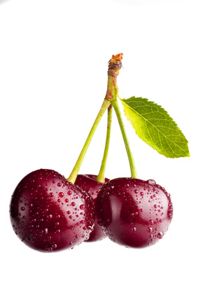

Sweet Cherries (Prunus avium)

Mating & Breeding System: Like other Prunus species, sweet cherry flowers possess one style and one ovary containing a pair of ovules. Most sweet cherry cultivars are self-incompatible and require cross-pollination with pollen from an appropriate pollenizer cultivar. However, there are some cultivars available that are self-fruitful (i.e. Vandalay, Stella, Sonata). An extensive chart of cultivar compatability and bloom times can be found in Choi et al. (2000).
Pollination, Quality & Yield: Insects are required to carry pollen from a pollenizer to the the producing cultivar. Pollenizers should be placed evenly amongst production trees. Some cultivars lose fertility after blooming begins, so pollination should take place quickly. If only one of the two ovules is fertilized then one side of the fruit may be underdeveloped, which can reduce the fruit’s value.
Pollination Recommendations: Cherries are self-incompatible. A tree cannot be fertilized by its own pollen, or even the pollen of a tree of the same cultivar. As a general rule in tree fruit orchards, planting a pollenizer cultivar every third or fourth tree in a staggered pattern will ensure that each main cultivar tree is adjacent to a pollenizer. Growers should confirm that their choice of pollenizer is suitable for cross-pollination with the production cultivar when planning an orchard.
The standard recommendation to facilitate pollination in sweet cherries is 1.5-5 colonies of honey bees per hectare, to be placed in the orchard by the time of first bloom. Because cherries bloom early and honey bees will not forage below 15°C or in windy or damp conditions, fruit set and yield may suffer. Hives should face to the south, to facilitate warming in the morning and encourage bee activity.
Both bumble bees and blue orchard bees have shown potential in pollinating early-blooming tree fruit crops, although research is necessary into their effectiveness for this particular crop in Ontario. A study in northern Utah found that populations of about 2000 female blue orchard bees per hectare increased cherry yields 2.2 times over trees that were pollinated by honey bees. Wild bees and possibly even flies may also be useful, particularly in small orchards adjacent to wild habitat. However, it would take some management to increase their populations to an adequate level in most situations.
Managing competing blooms is an important concern when managing pollination. If encouraging wild pollinators, or establishing an alternative pollinator such as the blue orchard bee, is of interest to the orchardist, alternate forage is required for these bees to complete their life cycle (see Examples of Alternative Pollinator Forage and “Habitat and Food”). One option for orchardists is to plant forage between tree rows which will flower after the crop bloom period.
At the same time, weeds or alternative forage should not be allowed to compete with crop blooms (especially if the crop is less attractive to foraging insects than the weeds). Growers should mow (not apply herbicide) competing blooms during fruit bloom only. However, growers should also be aware that alternative forage may attract bees to orchards off-bloom. This can result in bee kills for neighbouring beekeepers if the grower uses insecticides.
References
Benedek, P. & Nyeki, J. 1996. Fruit set of selected self-sterile and self-fertile fruit cultivars as affected by the duration of insect pollination. Acta Horticulturae 423:57-63.
Bosch, J. & Kemp, W.P. 1999. Exceptional cherry production in an orchard pollinated with blue orchard bees. Bee World 80:163-173.
Bosch, J., Kemp, W.P., & Trostle, G.E. 2006. Bee population returns and cherry yields in an orchard pollinated with Osmia lignaria (Hymenoptera: Megachilidae). Journal of Economic Entomology 99:408-413.
Choi, C., Livermore, K., & Andersen, R.L. 2000. Sweet cherry pollination: recommendation based on compatibility groups and bloom time. Journal of the American Pomological Society 54:148-152.
Delaplane, K.S. & Mayer, D.F. 2000. Crop Pollination by Bees. CABI Publishing, New York.
De Oliveira, D., Gomes, A., Ilharco, F.A., Manteigas, A.M., Pinto, J., & Ramalho, J. 2001a. Pollen carriers in the sweet cherry, Prunus avium, in Portugal. Acta Horticulturae 561:253-256.
Eaton, G.W. 1959. A study of the megagametophyte in Prunus avium and its relation to fruit setting. Canadian Journal of Plant Science 39:466-476.
Eaton, G.W. 1962. Further studies on sweet cherry embryo sacs in relation to fruit setting. Report of the Horticulture Experiment Station Production Lab, Vineland ON.
Free, J.B. 1993. Insect Pollination of Crops, 2nd edition. Academic Press.
Hedhly, A., Hormaza, J. I., & Herrero, M. 2007. Warm temperatures at bloom reduce fruit set in sweet cherry. Journal of Applied Botany and Food Quality 81:158-164.
Kevan, P.G. 1988. Pollination, crops and bees. OMAFRA publication 72.
Scott-Dupree, C.D. & Winston, M.L. 1987. Wild bee pollinator diversity and abundance in orchard and uncultivated habitats in the Okanagan Valley, British Columbia. Canadian Entomologist 119:735-745.
Scott-Dupree, C.D., Winston, M., Hergert, G., Jay, S.C., Nelson, D., Gates, J., Termeer, B., & Otis, G. 1995. A guide to managing bees for crop pollination. Canadian Association of Professional Apiculturists, Aylesford NS.
Slingerland, K., Fisher, H., & Hunter, D. 2002a. Pear cultivars. OMAFRA FactSheet 02-039.
Thomson, J.D. & Goodell, K. 2001. Pollen removal and deposition by honeybee and bumblebee visitors to apple and almond flowers. Journal of Applied Ecology 38:1032-1044.